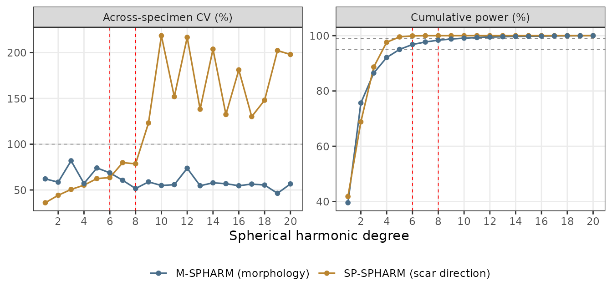
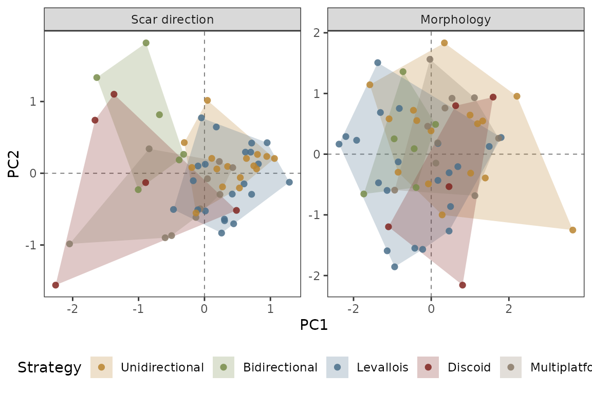
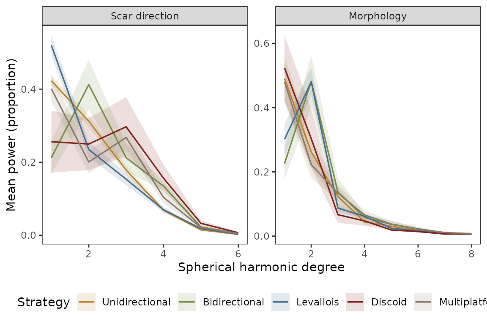
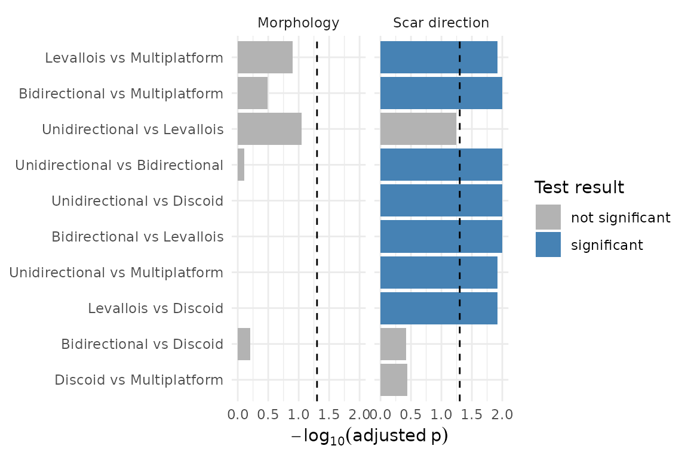
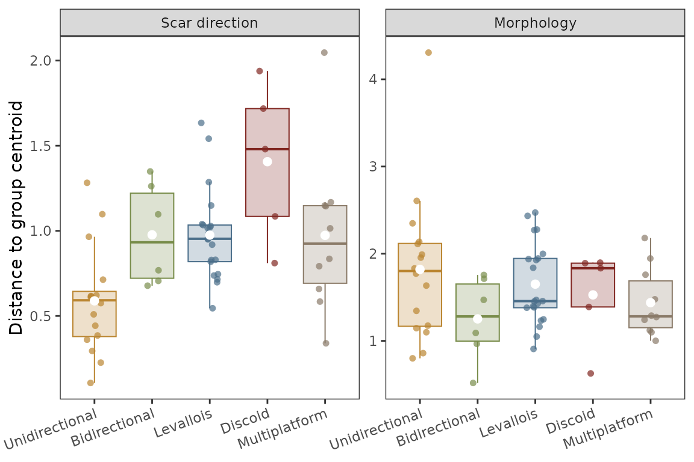

Statistical Analysis of Spherical Harmonic Data
Peiyuan Xiao, Ben Marwick
2026-09-20
Source:vignettes/Statistics.Rmd
Statistics.RmdIntroduction
The goal of this vignette is to walk you through using the spharmlithic package to tackle three research questions that are central to many analyses of stone artefact assemblages from archaeological sites:
- Exploration: how is artefact shape/scar pattern variation structured across specimens? We will demonstrate how to use Principal Component Analysis (PCA) for this.
- Group difference: do artefacts made by different reduction strategies differ in their SPHARM descriptors? PERMANOVA is a classic statistical method for this question.
- Standardisation: is one reduction strategy more standardised (less variable) than another? Multivariate dispersion (PERMIDSP) is useful to answer this question.
This vignette follows from our companion vignette
vignette("Introduction", package = "spharmlithic") that
walks through how to turn 3D artefacts into spherical harmonic (SH)
coefficients with spharm_from_directions() and
spharm_from_meshes(), and how to flatten the result with
spharm_to_dataframe(). Here we demonstrate functions in the
package that are designed for typical research applications.
Our choice of statistical methods for this walk-through is informed by three features of SPHARM power spectra:
- Power spectra are rotation-invariant. Each
power_lNvalue summarises the energy at spherical harmonic degreeN, independent of how the specimen was oriented. This makes a power spectrum a robust feature set for cross-specimen comparison, so we use it throughout this workflow. - Power spectra are compositional data. Each specimen’s spectrum is closed to a constant sum (here, 1): the values are relative proportions of energy across degrees, not absolute magnitudes. Compositional data live on the simplex, not in Euclidean space, so applying Euclidean-based methods (PCA, distances) to the raw proportions induces spurious negative correlations (the closure problem). To fix this we use the isometric log-ratio (ILR) transform (Egozcue et al. 2003), which maps the composition into ordinary Euclidean coordinates where standard methods are valid. Distances computed on ILR coordinates are Aitchison distances.
- The number of variables measured on each artefact via spherical
harmonics power spectra,
p, is often comparable to or larger thann. A typical power spectrum may have 20+ columns. Classical MANOVA becomes unstable and unreliable when the number of variables approaches the number of specimens. To avoid this we use distance- and permutation-based methods (PERMANOVA,betadisper) and dimension reduction (PCA).
The Example Data
The spharmlithic package bundles a worked example: spherical harmonic
power spectra for 58 experimental cores knapped in five known reduction
strategies by Professor Chris Clarkson. These data are included here
with his permission. In this section we load the data, two parallel
tables that describe the artefacts in two domains: scar direction (how
flaking removals are organised) and morphology (overall shape). These
tables were produced by following the steps in our Introduction vignette
(spharm_from_*() → spharm_to_dataframe()). We
also include with the package the flattened tables resulting from the
Introduction vignette. This means that all the code in this statistical
analysis vignette can be run without needing the Python backend.
# load the tables
scar <- read.csv(
system.file("extdata", "exp_cores_scar.csv", package = "spharmlithic"),
check.names = FALSE)
morph <- read.csv(
system.file("extdata", "exp_cores_morph.csv", package = "spharmlithic"),
check.names = FALSE)
# set metadata
strategy_levels <- c("Unidirectional", "Bidirectional",
"Levallois", "Discoid", "Multiplatform")
scar$Typology <- factor(scar$Typology, levels = strategy_levels)
morph$Typology <- factor(morph$Typology, levels = strategy_levels)
# prepare a palette for visualization
typology_colors <- c(
"Unidirectional" = "#BA8530",
"Bidirectional" = "#788C4A",
"Levallois" = "#4A6E8A",
"Discoid" = "#802520",
"Multiplatform" = "#8A7A68"
)
# display summary table
knitr::kable(
as.data.frame(table(Strategy = scar$Typology)),
col.names = c("Reduction strategy", "n"),
caption = "Experimental cores per reduction strategy")| Reduction strategy | n |
|---|---|
| Unidirectional | 16 |
| Bidirectional | 6 |
| Levallois | 21 |
| Discoid | 5 |
| Multiplatform | 10 |
Each of the two tables has an ID, a
Typology, and the power spectrum from degree 1 to 20
(power_l1 … power_l20; degree 0, the constant
term, is dropped because it carries no shape information). Each row sums
to 1:
| ID | Typology | power_l1 | power_l2 | power_l3 | power_l4 |
|---|---|---|---|---|---|
| EXP01_Levallois preferential | Levallois | 0.3830542 | 0.3872962 | 0.1750080 | 0.0321164 |
| EXP02_Cylindrical bidirectional | Bidirectional | 0.2426505 | 0.4115962 | 0.1357000 | 0.1865594 |
| EXP03_Conical unidirectional | Unidirectional | 0.4902656 | 0.3305495 | 0.1286726 | 0.0373926 |
| EXP04_Levallois preferential | Levallois | 0.4756477 | 0.2595127 | 0.2006622 | 0.0495227 |
| EXP05_Levallois preferential | Levallois | 0.4150288 | 0.2784514 | 0.1451042 | 0.1267082 |
| EXP06_Levallois convergent | Levallois | 0.5520493 | 0.1226533 | 0.2274524 | 0.0854986 |
# Confirm the spectra are closed (compositional)
range(rowSums(scar[, grep("^power_l", names(scar))]))
#> [1] 1 1To prepare for answering our research questions in the next sections, we separate the numeric feature matrix from the grouping variable:
Compositional Data Analyses of the Power Spectra
Before any Euclidean-based analysis, we move the spectra off the
simplex with the ILR transform. ILR (like any log-ratio) requires
strictly positive values, but the scar spectra contain exact zeros
(degrees with no energy). We handle them with the function
make_ilr which includes a multiplicative zero replacement
function that preserves the unit sum replace_zeros,
following Xiao et al (in preparation):
library(spharmlithic)
library(dplyr)
# ILR coordinates: D parts -> (D - 1) real-valued coordinates per specimen.
scar_ilr <- make_ilr(scar_feat) # 6 degrees -> 5 ILR coordinates
morph_ilr <- make_ilr(morph_feat) # 8 degrees -> 7 ILR coordinates
# first few rows
head(scar_ilr)
#> ilr_1 ilr_2 ilr_3 ilr_4 ilr_5
#> 1 0.007787566 -0.6440944 -1.9237593 -1.912669 -3.683323
#> 2 0.373649902 -0.6902543 -0.2124254 -2.377921 -2.701297
#> 3 -0.278735083 -0.9312802 -1.7287464 -2.508754 -3.334369
#> 4 -0.428416174 -0.4573348 -1.5351197 -2.452416 -3.717115
#> 5 -0.282209403 -0.6951193 -0.6089266 -1.714980 -3.683922
#> 6 -1.063683481 -0.1098667 -0.9250426 -2.654795 -3.647890The output is a data frame with one row per artefact, and one column
for each ILR coordinate, these are the transformed power spectra. All of
the analyses below operate on these ILR coordinates. Note that this step
is specific to the power spectrum (a composition); the raw coefficients
returned by spharm_to_dataframe(include_coeffs = TRUE) are
ordinary real-valued numbers and would be analysed directly, not
log-ratio transformed.
How to choose an appropriate number of degrees from the power spectra?
The feature matrices defined above keep only the first 6 degrees for scar direction and the first 8 for morphology, rather than all 20. This section shows the diagnostic behind that choice.
Although coefficients were computed to degree 20 for faithful reconstruction, retaining all 20 degrees for statistical comparison would add dimensionality and, for scar patterns, noise. We therefore screen degrees prior to all statistical analyses using two diagnostics: the across-specimen coefficient of variation (CV), indexing the reliability of each degree’s between-specimen signal, and cumulative power, indexing the share of total variance each degree carries.
We provide the function degree_diagnostics to operate on
the full 20-degree spectra and calculate per-degree coefficients of
variation and cumulative mean power from a power spectrum before the
truncation used in the next steps.
library(ggplot2)
deg_df <- rbind(
degree_diagnostics(scar, "SP-SPHARM (scar direction)"),
degree_diagnostics(morph, "M-SPHARM (morphology)"))
deg_df$descriptor <- factor(deg_df$descriptor,
levels = c("M-SPHARM (morphology)", "SP-SPHARM (scar direction)"))
descriptor_colors <- c(
"M-SPHARM (morphology)" = "#4A6E8A",
"SP-SPHARM (scar direction)" = "#BA8530")
# Long form so the two diagnostics share one faceted figure.
deg_long <- tidyr::pivot_longer(deg_df, c(cv_pct, cumul_pct),
names_to = "metric", values_to = "value")
deg_long$metric <- factor(deg_long$metric, c("cv_pct", "cumul_pct"),
labels = c("Across-specimen CV (%)", "Cumulative power (%)"))
# Panel-specific reference lines: CV = 100% (noise threshold), and the 95 / 99%
# cumulative-power levels.
ref_lines <- data.frame(
metric = factor(c("Across-specimen CV (%)",
"Cumulative power (%)", "Cumulative power (%)"),
levels = levels(deg_long$metric)),
yint = c(100, 95, 99))
ggplot(deg_long, aes(degree, value, colour = descriptor)) +
geom_hline(
data = ref_lines,
aes(yintercept = yint),
linetype = "dashed",
colour = "grey55",
linewidth = 0.3
) +
geom_vline(
xintercept = c(6, 8),
colour = "red",
linetype = "dashed",
linewidth = 0.3
) +
geom_line(linewidth = 0.6) +
geom_point(size = 1.4) +
scale_colour_manual(values = descriptor_colors) +
scale_x_continuous(breaks = seq(2, 20, 2)) +
facet_wrap( ~ metric, scales = "free_y") +
labs(x = "Spherical harmonic degree", y = NULL, colour = NULL) +
theme_bw() +
theme(panel.grid.minor = element_blank(),
legend.position = "bottom")
Per-degree diagnostics for the two power spectra (experimental cores, n = 58): across-specimen coefficient of variation (left) and cumulative power (right), each overlaying the two domains. Red dashed lines mark the retained truncations (degree 6 for scar direction, degree 8 for morphology); grey dashed lines mark CV = 100% and the 95% / 99% cumulative-power levels.
The two spectra behave differently and are truncated on different grounds. For scar direction (SP-SPHARM), power is effectively exhausted by the sixth degree (cumulative energy ≈ 99.9%), and higher degrees are noise-dominated (CV > 100% from degree 9 onward); we therefore retain degrees 1–6. For morphology (M-SPHARM), between-specimen signal remains reliable across all degrees (CV < 90% throughout), but variance is strongly concentrated in the low degrees, with ~98% of cumulative power captured by the eighth degree; we retain degrees 1–8, since the reliable but very low-energy higher degrees (together under 2% of power) would inflate dimensionality and dilute multivariate comparisons without materially improving discrimination.
How to explore shape variation with PCA?
A quick way to see whether the strategies separate at all is to
project each domain’s ILR coordinates onto their first two principal
components. We run each PCA on the unscaled coordinates (ie. no
scale. = TRUE in the prcomp function). This is
because ILR already lays the composition out in a Euclidean space whose
distances are the Aitchison distances the PERMANOVA below relies on, so
standardising each coordinate would reweight the parts and distort that
geometry.
pca_scar <- prcomp(scar_ilr)
pca_morph <- prcomp(morph_ilr)
# Variance explained by the first few components, both domains
var_tab <- data.frame(
PC = paste0("PC", 1:5),
`Scar direction (%)` = round(100 * summary(pca_scar)$importance[2, 1:5], 1),
`Morphology (%)` = round(100 * summary(pca_morph)$importance[2, 1:5], 1),
check.names = FALSE)
knitr::kable(var_tab, row.names = FALSE,
caption = "Variance explained by the leading principal components, by domain")| PC | Scar direction (%) | Morphology (%) |
|---|---|---|
| PC1 | 41.2 | 40.1 |
| PC2 | 25.0 | 23.3 |
| PC3 | 20.1 | 13.2 |
| PC4 | 7.8 | 10.6 |
| PC5 | 5.9 | 7.4 |
library(ggplot2)
pca_df <- rbind(
data.frame(Domain = "Scar direction",
PC1 = pca_scar$x[, 1], PC2 = pca_scar$x[, 2], Strategy = groups),
data.frame(Domain = "Morphology",
PC1 = pca_morph$x[, 1], PC2 = pca_morph$x[, 2], Strategy = groups))
pca_df$Domain <- factor(pca_df$Domain, levels = c("Scar direction", "Morphology"))
pca_df$Strategy <- factor(pca_df$Strategy, levels = strategy_levels)
# Convex hulls per strategy, matching the project's LDA / ternary scatterplots
hull_df <- pca_df %>%
group_by(Domain, Strategy) %>%
slice(chull(PC1, PC2)) %>%
ungroup()
ggplot(pca_df, aes(PC1, PC2, colour = Strategy)) +
geom_hline(
yintercept = 0,
colour = "grey50",
linewidth = 0.35,
linetype = "dashed"
) +
geom_vline(
xintercept = 0,
colour = "grey50",
linewidth = 0.35,
linetype = "dashed"
) +
geom_polygon(
data = hull_df,
aes(fill = Strategy, group = Strategy),
alpha = 0.25,
colour = NA
) +
geom_point(size = 2,
alpha = 0.85,
shape = 16) +
scale_colour_manual(values = typology_colors) +
scale_fill_manual(values = typology_colors) +
facet_wrap( ~ Domain, scales = "free") +
labs(x = "PC1", y = "PC2") +
theme_bw() +
theme(panel.grid = element_blank(),
legend.position = "bottom")
Cores in the space of the first two principal components of the ILR coordinates, by domain, coloured by reduction strategy, with convex hulls outlining each group. Axis scales are free; variance explained is in the table above.
These visualisations give us a first impression of both location (do the groups sit in different places?) and spread (are some groups tighter than others?). We will quantitatively answer those two questions below.
It is also informative to look at the mean power spectrum of each strategy (on the original closed scale). This is the degree at which energy concentrates reflects the angular scale of the dominant structure.
library(tidyr)
# The two domains now keep different numbers of degrees, so pivot each to long
# form (a shared schema) before combining.
spec_long <- rbind(
data.frame(
Domain = "Scar direction",
Strategy = groups,
scar_feat,
check.names = FALSE
) |>
tidyr::pivot_longer(
cols = all_of(scar_cols),
names_to = "degree",
values_to = "power"
),
data.frame(
Domain = "Morphology",
Strategy = groups,
morph_feat,
check.names = FALSE
) |>
tidyr::pivot_longer(
cols = all_of(morph_cols),
names_to = "degree",
values_to = "power"
)
)
spec_summ <- spec_long %>%
mutate(degree = readr::parse_number(degree),
Domain = factor(Domain, levels = c("Scar direction", "Morphology")),
Strategy = factor(Strategy, levels = strategy_levels)) %>%
group_by(Domain, Strategy, degree) %>%
summarise(
power.m = mean(power, na.rm = TRUE),
power.se = sd(power, na.rm = TRUE) / sqrt(sum(!is.na(power))),
.groups = "drop"
)
ggplot(spec_summ,
aes(degree, power.m, colour = Strategy, fill = Strategy)) +
geom_ribbon(
aes(ymin = power.m - power.se, ymax = power.m + power.se),
alpha = 0.15,
colour = NA
) +
geom_line(linewidth = 0.6) +
scale_colour_manual(values = typology_colors) +
scale_fill_manual(values = typology_colors) +
facet_wrap( ~ Domain, scales = "free") +
labs(x = "Spherical harmonic degree",
y = "Mean power (proportion)") +
theme_bw() +
theme(panel.grid = element_blank(),
legend.position = "bottom")
Mean power spectrum by reduction strategy and domain (ribbon = +/- 1 SE). Values are closed proportions.
Reproducibility
In the following sections we introduce statistical significance tests
that are based on randomization procedures. To ensure reproducible
output, we use the set.seed() immediately before each test.
Increasing the number of permutations tightens the p-value estimate, but
at the cost of run time. We set this to 999 for efficiency, for a
research application you might increase this by an order of
magnitude.
How to determine if reduction strategies differ?
The PCA we did in the previous section is descriptive and exploratory
only. To test whether the reduction strategies have a statistically
significant difference in their spherical harmonic descriptors we use
PERMANOVA (Anderson 2001), as implemented in
vegan::adonis2(). PERMANOVA partitions a distance matrix
among groups and assesses the group effect by permutation, so it copes
gracefully with many variables and few specimens.
library(vegan)
grp_df <- data.frame(Strategy = groups)
set.seed(1)
pm_scar <- adonis2(dist(scar_ilr) ~ Strategy,
data = grp_df, permutations = 999)
pm_morph <- adonis2(dist(morph_ilr) ~ Strategy,
data = grp_df, permutations = 999)| Domain | R2 | Pseudo-F | p-value |
|---|---|---|---|
| Scar direction | 0.302 | 5.726 | 0.001 |
| Morphology | 0.123 | 1.864 | 0.035 |
The scar direction PERMANOVA returns p = 0.001, with R2 = 0.302 of the variation in scar pattern attributable to reduction strategy. In other words, there is a significant difference in the power spectra of scar patterns between the various core types.
Which reduction strategies differ?
The omnibus PERMANOVA tells us that the strategies differ, but not
which specific pairs. For that, we provide a function
pairwise_permanova that runs PERMANOVA on each pair of
strategies and corrects the p-values for multiple comparisons:
set.seed(1)
pw_scar <- pairwise_permanova(scar_ilr, groups)
pw_morph <- pairwise_permanova(morph_ilr, groups)| Domain | group1 | group2 | pair | n1 | n2 | R2 | F | p | p_adj |
|---|---|---|---|---|---|---|---|---|---|
| Scar direction | Unidirectional | Bidirectional | Unidirectional vs Bidirectional | 16 | 6 | 0.378 | 12.156 | 0.001 | 0.010 |
| Scar direction | Unidirectional | Levallois | Unidirectional vs Levallois | 16 | 21 | 0.085 | 3.236 | 0.019 | 0.057 |
| Scar direction | Unidirectional | Discoid | Unidirectional vs Discoid | 16 | 5 | 0.346 | 10.054 | 0.001 | 0.010 |
| Scar direction | Unidirectional | Multiplatform | Unidirectional vs Multiplatform | 16 | 10 | 0.220 | 6.775 | 0.002 | 0.012 |
| Scar direction | Bidirectional | Levallois | Bidirectional vs Levallois | 6 | 21 | 0.272 | 9.354 | 0.001 | 0.010 |
| Scar direction | Bidirectional | Discoid | Bidirectional vs Discoid | 6 | 5 | 0.108 | 1.086 | 0.379 | 0.379 |
| Scar direction | Bidirectional | Multiplatform | Bidirectional vs Multiplatform | 6 | 10 | 0.231 | 4.202 | 0.001 | 0.010 |
| Scar direction | Levallois | Discoid | Levallois vs Discoid | 21 | 5 | 0.225 | 6.964 | 0.002 | 0.012 |
| Scar direction | Levallois | Multiplatform | Levallois vs Multiplatform | 21 | 10 | 0.127 | 4.208 | 0.002 | 0.012 |
| Scar direction | Discoid | Multiplatform | Discoid vs Multiplatform | 5 | 10 | 0.109 | 1.588 | 0.182 | 0.364 |
| Morphology | Unidirectional | Bidirectional | Unidirectional vs Bidirectional | 16 | 6 | 0.082 | 1.789 | 0.130 | 0.780 |
| Morphology | Unidirectional | Levallois | Unidirectional vs Levallois | 16 | 21 | 0.098 | 3.794 | 0.009 | 0.090 |
| Morphology | Unidirectional | Discoid | Unidirectional vs Discoid | 16 | 5 | 0.027 | 0.525 | 0.745 | 1.000 |
| Morphology | Unidirectional | Multiplatform | Unidirectional vs Multiplatform | 16 | 10 | 0.016 | 0.392 | 0.874 | 1.000 |
| Morphology | Bidirectional | Levallois | Bidirectional vs Levallois | 6 | 21 | 0.024 | 0.605 | 0.635 | 1.000 |
| Morphology | Bidirectional | Discoid | Bidirectional vs Discoid | 6 | 5 | 0.182 | 2.004 | 0.090 | 0.630 |
| Morphology | Bidirectional | Multiplatform | Bidirectional vs Multiplatform | 6 | 10 | 0.146 | 2.389 | 0.041 | 0.328 |
| Morphology | Levallois | Discoid | Levallois vs Discoid | 21 | 5 | 0.059 | 1.515 | 0.222 | 1.000 |
| Morphology | Levallois | Multiplatform | Levallois vs Multiplatform | 21 | 10 | 0.103 | 3.341 | 0.014 | 0.126 |
| Morphology | Discoid | Multiplatform | Discoid vs Multiplatform | 5 | 10 | 0.087 | 1.240 | 0.283 | 1.000 |
We read p_adj rather than the raw p to
decide which pairs differ: with five strategies there are ten
comparisons per domain, and the correction guards against false
positives from repeated testing. We use the
Holm-Bonferroni step-down correction
(method = "holm"), which controls the family-wise error
rate (FWER) while being uniformly more powerful than plain Bonferroni;
switch p.adjust.method to "BH" for a less
conservative false-discovery-rate criterion.
pw_all_log <-
pw_all %>%
mutate(
sig = p_adj < 0.05,
score = -log10(p_adj)
)
ggplot(
pw_all_log,
aes(
forcats::fct_reorder(pair, score),
score,
fill = sig
)
) +
geom_col() +
geom_hline(
yintercept = -log10(0.05),
linetype = 2
) +
coord_flip() +
labs(
x = NULL,
y = expression(-log[10](adjusted~p))
) +
scale_fill_manual(
name = "Test result",
values = c("FALSE" = "grey70",
"TRUE" = "steelblue"),
labels = c("not significant", "significant")
) +
theme_minimal() +
facet_wrap( ~Domain)
Adjusted p-values for pairwise PERMANOVA tests. We plot −log₁₀(p_adj) instead of raw adjusted p-values to spread out tiny p-values and make them more interpretable and visually informative. Bigger bars mean stronger evidence for signficant difference. Vertical dashed line indicates p = 0.05
The figure above shows that seven of the pairs of core reduction strategies have significant differences in their scar patterns,but only one pair differs in morphology. This suggests that scar vectors are more effective discriminators of reduction strategy than morphology. Within the scar direction plot we can see Discoids tend to fail to be distinguished from other strategies.
Is one strategy more standardised?
A central question in lithic studies concerns how standardised a reduction strategy is, which is a question about variability: a more standardised strategy produces a tighter cluster of specimens. Now that we have established that our assemblage contains reduction strategies that we can distinguish between using PCA and PERMANOVA, we can investigate differences in variability within the difference strategies.
vegan::betadisper() is the multivariate analogue of
Levene’s test: it measures each specimen’s Aitchison distance to its
group centroid and tests whether those distances differ among groups
(Anderson 2006). Smaller average distances correspond to tighter
clusters, which we can interpret as more standardised.
# type = "centroid" gives the original PERMDISP of Anderson (2006): distances are measured to the group centroid (betadisper's default is the spatial median).
bd_scar <- betadisper(dist(scar_ilr), groups, type = "centroid")
bd_morph <- betadisper(dist(morph_ilr), groups, type = "centroid")
set.seed(1)
pt_scar <- permutest(bd_scar, permutations = 999)
pt_morph <- permutest(bd_morph, permutations = 999)| Domain | F | p-value |
|---|---|---|
| Scar direction | 6.577 | 0.001 |
| Morphology | 1.278 | 0.313 |
disp_df <- rbind(
data.frame(Domain = "Scar direction", Strategy = groups, distance = bd_scar$distances),
data.frame(Domain = "Morphology", Strategy = groups, distance = bd_morph$distances))
disp_df$Domain <- factor(disp_df$Domain, levels = c("Scar direction", "Morphology"))
disp_df$Strategy <- factor(disp_df$Strategy, levels = strategy_levels)
ggplot(disp_df,
aes(Strategy, distance, colour = Strategy, fill = Strategy)) +
geom_boxplot(outlier.shape = NA,
alpha = 0.25,
linewidth = 0.35) +
geom_jitter(
width = 0.15,
size = 1.6,
alpha = 0.7,
shape = 16
) +
stat_summary(
fun = mean,
geom = "point",
shape = 16,
size = 2.4,
colour = "white"
) +
scale_colour_manual(values = typology_colors) +
scale_fill_manual(values = typology_colors) +
facet_wrap( ~ Domain, scales = "free_y") +
labs(x = NULL, y = "Distance to group centroid") +
theme_bw() +
theme(
panel.grid = element_blank(),
axis.text.x = element_text(angle = 20, hjust = 1),
legend.position = "none"
)
Distance to group centroid by reduction strategy and domain. Lower and tighter = more standardised.
A significant permutest p-value (table above) means the
strategies are not equally variable in that domain; the boxplots show
which are tighter (more standardised) and which are more dispersed. For
a direct ranking within a domain, average each group’s distance to its
centroid, e.g. tapply(bd_scar$distances, groups, mean) for
scar direction.
It is important to read the two tests together. PERMANOVA and
PERMDISP are not independent: a PERMANOVA tests whether group centroids
differ in multivariate space and is sensitive to differences in
dispersion as well as in location. PERMDISP tests whether groups differ
in their within-group variability (spread). When betadisper
is significant, a significant PERMANOVA can no longer be read as
unambiguous evidence of a location difference. The groups may differ in
spread, in centroids, or both. So if PERMANOVA and PERMDISP are both
significant, it means at least part of the PERMANOVA signal may be
driven by differences in variance, not just differences in mean
composition. In that situation, we should interpret the group
“difference” cautiously and thoroughly investigate the ordination (ie.
PCA plot) and the dispersion boxplots to tell the two apart (Anderson
& Walsh 2013).
Summary and Next Steps
We have now demonstrated the key steps of working with spherical harmonics to explore shape variation using PCA, we have investigated between- and within-group differences in shape, and we have tested for differences in standardisation.
If your goal is to characterise a stone artefact assemblage, the next steps could include adding specimen metadata (raw material, layer, reduction intensity) and explore those the interaction of those factors with shape variation.
Alternatively, if you are interested in method development, you could
swap in the full coefficient vectors (include_coeffs = TRUE
in spharm_to_dataframe()) for a finer-grained,
alignment-dependent analysis. These are real value (not compositional),
so use them directly with Euclidean distances.
References
Aitchison, J. (1986). The Statistical Analysis of Compositional Data. London: Chapman & Hall.
Anderson, M. J. (2001). A new method for non-parametric multivariate analysis of variance. Austral Ecology, 26(1), 32–46.
Anderson, M. J. (2006). Distance-based tests for homogeneity of multivariate dispersions. Biometrics, 62(1), 245–253.
Anderson, M. J., & Walsh, D. C. I. (2013). PERMANOVA, ANOSIM, and the Mantel test in the face of heterogeneous dispersions: What null hypothesis are you testing? Ecological Monographs, 83(4), 557–574.
Egozcue, J. J., Pawlowsky-Glahn, V., Mateu-Figueras, G., & Barceló-Vidal, C. (2003). Isometric logratio transformations for compositional data analysis. Mathematical Geology, 35(3), 279–300.
Wieczorek, M. A., & Meschede, M. (2018). SHTools: Tools for working with spherical harmonics. Geochemistry, Geophysics, Geosystems, 19(8), 2574–2592.
Xiao, P., Li, H., & Marwick, B. (in preparation). Characterizing core morphology and scar patterning within a unified spherical harmonic framework.